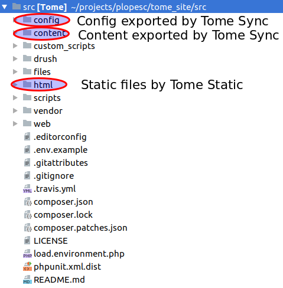
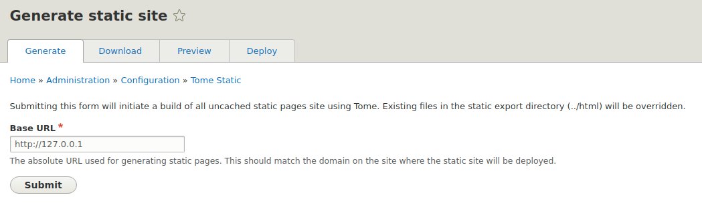
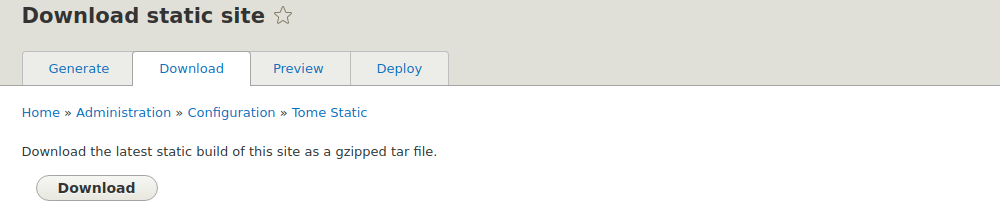

Tome: The native way to build Drupal static sites
Pablo López Escobés
Pablo López
PHP/Drupal Developer
@plopesc
KEEP IT SIMPLE!
Static sites have multiple benefits
Simpler
- No PHP, MySQL or other server side requirements
- Gitlab/Github pages, Netlify
- Forget about caching, Varnish, etc.
Faster
- Just serve files
- CDN
Safer
- Forget about server side code security updates
- No database to take care of
- Other vectors are still there
But have some limitations
Authenticated users
- Same content for every user
Forms
- There is no backend to process the data
- There are some alternatives
Every change requires a deployment
- Force editors to be careful
- Deployments can be automated
WHY CAN'T MY SITE BE STATIC?
@brianperry
But I want to use Drupal
Multiple options

https://staticdrupal.site
Jekyll
- Built in Ruby
- Liquid templating engine
- Supported natively by Github pages
- Content in version control
- No Drupal 8 support
Gatsby
- Built in React
- JSX templating engine
- Content is fetched via GraphQL
- Incredibly fast
- Huge plugin ecosystem
- Not just for static sites
Tome
- Built natively in Drupal
- Twig templating engine
- Exports and imports content in JSON
- Useful to archive Drupal sites
Tome
- The native way to build Drupal static sites
- Drupal only runs in your local machine
- Static builds are always partial and cached by default
- All commands scale using a combination of concurrency and batching
- Requires Drupal 8.6.x & Drush 9
https://tome.fyi
CREDITS
Samuel Mortenson
Tome creator/maintainer
Drupal Security Team member
d.o: samuel.mortenson
@DrupalSAM
#tome
Tome architecture
- Tome is built as a family of modules
- Each module provides an isolated feature
- Not all required based on the project architecture
Tome Static
It handles the static site generation
$ drush tome:static
$ drush tome:static-export-path
$ drush tome:preview
Tome Sync
It handles the content & config storage
$ drush tome:clean-files
$ drush tome:export
$ drush tome:export-content
$ drush tome:import
$ drush tome:import-content
$ drush tome:import-complete
$ drush tome:import-partial
Tome Netlify
Integrates Netlify statig hosting & Tome
$ drush tome-netlify:deploy
Lunr Search
Integrates Lunr.js search into Drupal
Search index stored in JS
Can be used in non-static sites as well
Really fast
https://www.drupal.org/project/lunr
Drush commands
Helper drush commands in a separate package
$ composer require drupal-tome/tome_drush
$ drush tome:install
$ drush tome:init
https://github.com/drupal-tome/tome_drush
Basic setup
See: https://tome.fyi/docs/getting-started
$ composer create-project drupal-tome/tome-project my_site\
--stability dev --no-interaction --no-install
$ cd my_site
$ composer install
# Build a Drupal instance with SQLite and Tome enabled.
$ drush tome:init
$ drush runserver 127.0.0.1:8888
# Perform content changes and generate the static build.
$ drush tome:static
Project folder structure
Most Drupal features are supported
- Views using pagers
- Aliases/Redirect/Metatag
- Quicklink
- Simple sitemap
- Leaflet/Responsive images/Layout Builder
There are some limitations
- Anonymous users only
- Forms: Views Filters/Contact/Webform/Comments
- Voting: VotingAPI
- Search/Search API
- Multilingual only by path / domain
Workarounds
Forms
- Netlify forms integration
- Basic lambda functions
- 3rd party services
https://github.com/plopesc/lambda_form
Search
- Lunr
- Direct calls to external services
Event Subscribers
See: https://tome.fyi/docs/technical/api
class TomePathSubscriber implements EventSubscriberInterface {
public function collectPaths(CollectPathsEvent $event) {
$event->addPath('/my-custom-path');
$event->deletePath('/unnecessary-path');
}
public static function getSubscribedEvents() {
$events[TomeStaticEvents::COLLECT_PATHS][] = ['collectPaths'];
return $events;
}
}
Workflows
As much as you can imagine
Build local environment and deploy to Netlify
$ git clone git@github.com:plopesc/netlify-template.git
$ composer install
$ drush tome:install
$ drush runserver
# Create/edit content at 127.0.0.1:8888
$ git add . && git commit -m "Code updated" && git push
netlify.toml
[build]
command = "composer install && ./vendor/bin/drush tome:install -y\
&& ./vendor/bin/drush tome:static -l $DEPLOY_PRIME_URL"
publish = "html"
[build.environment]
PHP_VERSION="7.2"
Static site generation & deploy
See: https://github.com/drupal-tome/drupal-tome.github.io
drush cron -l https://tome-demo.github.io
drush tome:static -l https://tome-demo.github.io
rm -rf gh-pages
git clone git@github.com:tome-demo/tome-demo.github.io.git gh-pages
cd gh-pages
git checkout master || git checkout -b master
cd ..
rm -rf gh-pages/*
cp -r html/* gh-pages/
cd gh-pages
git add .
git commit -m 'Updating gh-pages site'
git push -u origin master
Manually
 Build Performance
| Nodes | Terms | Build time UI | Build time Drush |
|---|---|---|---|
| 20 | 3 | ~13.4s | ~7.5s |
| 100 | 20 | ~37.9s | ~15.9s |
| 5000 | 100 | ~35m | ~10m |
Basic Standard profile installation + Devel Generate